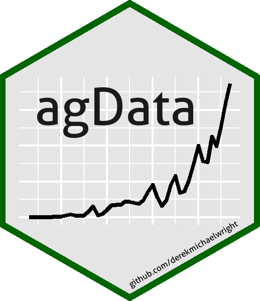
Data Sources
FAO Food and Agriculture Organization of the United Nations fao.org/faostat/STATCAN Statistics Canada statcan.gc.ca/USDA United States Department of Agriculture usda.gov/ISAAA International Service for the Acquisition of Agri-biotech Applications isaaa.org/
Instalation
devtools::install_github("derekmichaelwright/agData")
library(agData)
This will also the load the following packages: tidyverse, ggarrange, ggpubr & ggrepel.
theme_agData
xx <- data.frame(x = 1:10, y = 1:10, color = rep(c("1","2"), times = 2, each = 5))
mp <- ggplot(xx, aes(x = x, y = y, color = color)) +
geom_point(size = 4) + facet_grid(.~color)
mp

mp + theme_agData()

mp + theme_agData(legend.position = "none")

mp + theme_agData(linesize = 1.5, rotx = T,
bgFill = alpha("darkgreen",0.2),
stripFill = alpha("darkred",0.2),
lineColor = "darkorange")

agData_FAO_Crops
# Get Data
xx <- agData_FAO_Crops %>% as_tibble()
xx
## # A tibble: 1,673,790 x 6
## Area Crop Year Measurement Unit Value
## <fct> <chr> <dbl> <fct> <chr> <dbl>
## 1 Afghanistan Apples 1961 Area harvested hectares 2220
## 2 Afghanistan Apples 1961 Yield t/ha 6.80
## 3 Afghanistan Apples 1961 Production tonnes 15100
## 4 Afghanistan Apricots 1961 Area harvested hectares 4820
## 5 Afghanistan Apricots 1961 Yield t/ha 6.64
## 6 Afghanistan Apricots 1961 Production tonnes 32000
## 7 Afghanistan Barley 1961 Area harvested hectares 350000
## 8 Afghanistan Barley 1961 Yield t/ha 1.08
## 9 Afghanistan Barley 1961 Production tonnes 378000
## 10 Afghanistan Cotton lint 1961 Production tonnes 17000
## # ... with 1,673,780 more rows
# List Measurements
xx %>% distinct(Measurement, Unit)
## # A tibble: 3 x 2
## Measurement Unit
## <fct> <chr>
## 1 Area harvested hectares
## 2 Yield t/ha
## 3 Production tonnes
# List Crops
xx %>% distinct(Crop)
## # A tibble: 149 x 1
## Crop
## <chr>
## 1 Apples
## 2 Apricots
## 3 Barley
## 4 Cotton lint
## 5 Cottonseed
## 6 Figs
## 7 Grapes
## 8 Linseed
## 9 Maize
## 10 Melons, other (inc.cantaloupes)
## # ... with 139 more rows
# Spread data to wide format
xx %>% select(-Unit) %>% spread(Measurement, Value) %>% arrange(Year)
## # A tibble: 588,252 x 6
## Area Crop Year `Area harvested` Production Yield
## <fct> <chr> <dbl> <dbl> <dbl> <dbl>
## 1 Afghanist~ Apples 1961 2220 15100 6.80
## 2 Afghanist~ Apricots 1961 4820 32000 6.64
## 3 Afghanist~ Barley 1961 350000 378000 1.08
## 4 Afghanist~ Cotton lint 1961 NA 17000 NA
## 5 Afghanist~ Cottonseed 1961 NA 34000 NA
## 6 Afghanist~ Figs 1961 3200 8000 2.5
## 7 Afghanist~ Grapes 1961 50000 225000 4.5
## 8 Afghanist~ Linseed 1961 46800 17000 0.363
## 9 Afghanist~ Maize 1961 500000 700000 1.4
## 10 Afghanist~ Melons, other (inc.canta~ 1961 3300 15700 4.76
## # ... with 588,242 more rows
# Prep data for an example plot
xx <- xx %>% filter(Area == "World", Crop == "Lentils", Measurement == "Production")
# Plot
mp <- ggplot(xx, aes(x = Year, y = Value / 1000000, group = Area)) +
geom_line() +
theme_agData() +
labs(title = "Global Lentil Production",
y = "Million Tonnes", x = NULL)
ggsave("introduction_to_agdata_01.png", mp, width = 6, height = 4)
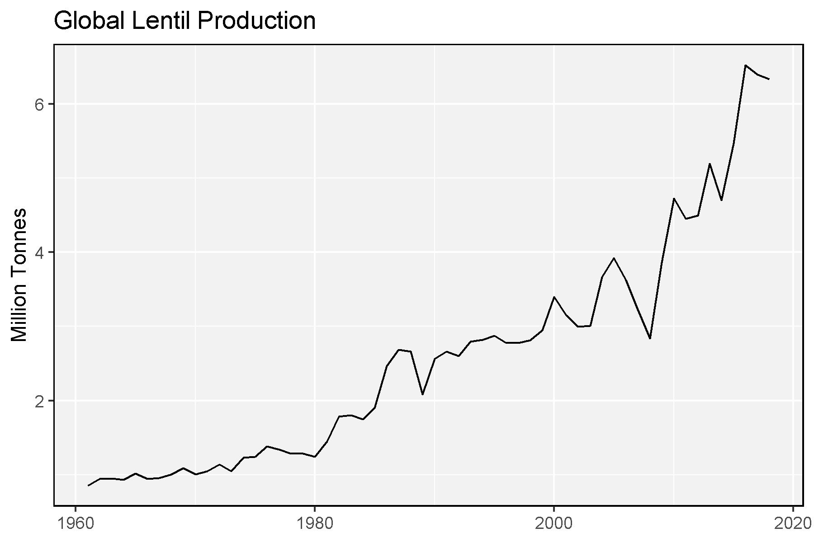
agData_FAO_LandUse
# Get Data
xx <- agData_FAO_LandUse %>% as_tibble()
xx
## # A tibble: 187,464 x 6
## Area Item Year Measurement Unit Value
## <fct> <chr> <dbl> <chr> <chr> <dbl>
## 1 Afghanist~ Country area 1961 Area 1000 hecta~ 65286
## 2 Afghanist~ Land area 1961 Area 1000 hecta~ 65286
## 3 Afghanist~ Agriculture 1961 Area 1000 hecta~ 37700
## 4 Afghanist~ Agricultural land 1961 Area 1000 hecta~ 37700
## 5 Afghanist~ Cropland 1961 Area 1000 hecta~ 7700
## 6 Afghanist~ Arable land 1961 Area 1000 hecta~ 7650
## 7 Afghanist~ Land under permanent crops 1961 Area 1000 hecta~ 50
## 8 Afghanist~ Land under perm. meadows and ~ 1961 Area 1000 hecta~ 30000
## 9 Afghanist~ Land area equipped for irriga~ 1961 Area 1000 hecta~ 2380
## 10 Albania Country area 1961 Area 1000 hecta~ 2875
## # ... with 187,454 more rows
# List Measurements
xx %>% distinct(Measurement, Unit)
## # A tibble: 2 x 2
## Measurement Unit
## <chr> <chr>
## 1 Area 1000 hectares
## 2 Carbon stock in living biomass million tonnes
# List Crops
xx %>% distinct(Item)
## # A tibble: 45 x 1
## Item
## <chr>
## 1 Country area
## 2 Land area
## 3 Agriculture
## 4 Agricultural land
## 5 Cropland
## 6 Arable land
## 7 Land under permanent crops
## 8 Land under perm. meadows and pastures
## 9 Land area equipped for irrigation
## 10 Inland waters
## # ... with 35 more rows
# Prep data for an example plot
xx <- xx %>% filter(Area == "World", Item == "Agricultural area")
# Plot
mp <- ggplot(xx, aes(x = Year, y = Value / 1000000, group = Area)) +
geom_line() +
theme_agData() +
labs(title = "Global Agricultural Area",
y = "Billion Hectares", x = NULL)
ggsave("introduction_to_agdata_02.png", mp, width = 6, height = 4)
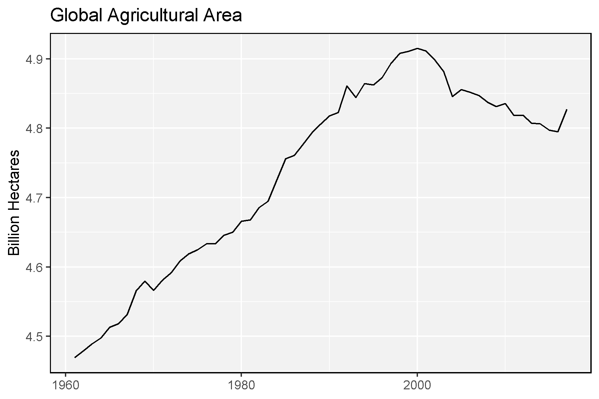
agData_FAO_Livestock
# Get Data
xx <- agData_FAO_Livestock %>% as_tibble()
xx
## # A tibble: 1,419,110 x 6
## Area Animal Year Measurement Unit Value
## <fct> <chr> <dbl> <chr> <chr> <dbl>
## 1 Afghanistan Asses 1961 Stocks number 1300000
## 2 Afghanistan Camels 1961 Stocks number 250000
## 3 Afghanistan Cattle 1961 Stocks number 2900000
## 4 Afghanistan Chickens 1961 Stocks number 4700000
## 5 Afghanistan Goats 1961 Stocks number 4200000
## 6 Afghanistan Horses 1961 Stocks number 276841
## 7 Afghanistan Mules 1961 Stocks number 20000
## 8 Afghanistan Sheep 1961 Stocks number 18000000
## 9 Afghanistan Cattle and Buffaloes 1961 Stocks number 2900000
## 10 Afghanistan Poultry Birds 1961 Stocks number 4700000
## # ... with 1,419,100 more rows
# List Measurements
xx %>% distinct(Measurement, Unit)
## # A tibble: 13 x 2
## Measurement Unit
## <chr> <chr>
## 1 Stocks number
## 2 Laying number
## 3 Yield 100mg/An
## 4 Production tonnes
## 5 Production 1000 No
## 6 Producing Animals/Slaughtered number
## 7 Yield hg/An
## 8 Production number
## 9 Yield/Carcass Weight hg/An
## 10 Yield/Carcass Weight 0.1g/An
## 11 Milk Animals number
## 12 Prod Popultn number
## 13 Yield hg
# List Crops
xx %>% distinct(Animal)
## # A tibble: 97 x 1
## Animal
## <chr>
## 1 Asses
## 2 Camels
## 3 Cattle
## 4 Chickens
## 5 Goats
## 6 Horses
## 7 Mules
## 8 Sheep
## 9 Cattle and Buffaloes
## 10 Poultry Birds
## # ... with 87 more rows
# Prep data for an example plot
xx <- xx %>% filter(Area == "Canada", Animal == "Chickens")
# Plot
mp <- ggplot(xx, aes(x = Year, y = Value / 1000000, group = Area)) +
geom_line() +
theme_agData() +
labs(title = "Chicken Production in Canada",
y = "Million Animals", x = NULL)
ggsave("introduction_to_agdata_03.png", mp, width = 6, height = 4)
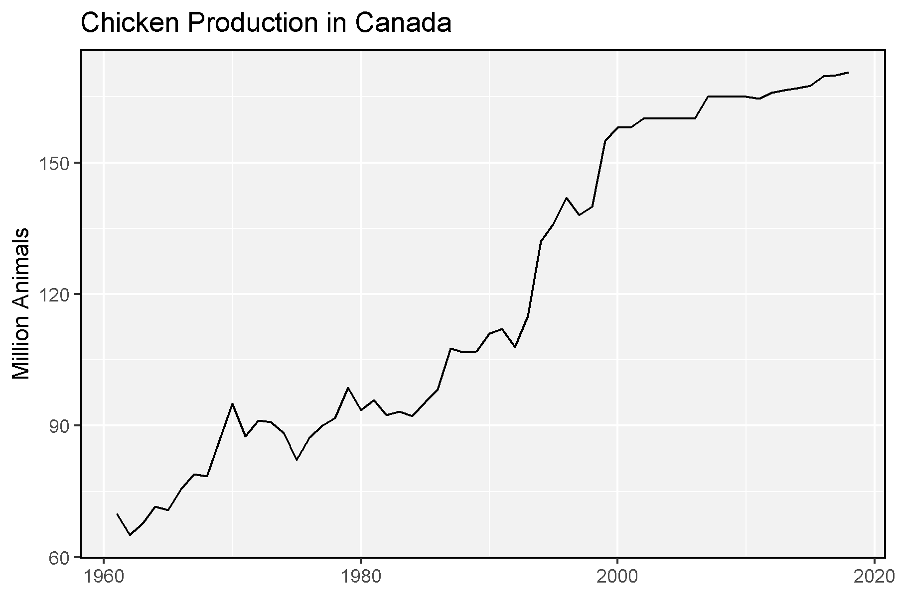
agData_FAO_Trade
# Get Data
xx <- agData_FAO_Trade %>% as_tibble()
xx
## # A tibble: 9,255,812 x 6
## Area Crop Year Measurement Unit Value
## <fct> <chr> <dbl> <chr> <chr> <dbl>
## 1 Afghanistan Butter, cow milk 1961 Import Quantity tonnes 23000
## 2 Afghanistan Butter, cow milk 1961 Import Value USD 16000
## 3 Afghanistan Cheese, whole cow milk 1961 Import Quantity tonnes 3000
## 4 Afghanistan Cheese, whole cow milk 1961 Import Value USD 2000
## 5 Afghanistan Cigarettes 1961 Import Quantity tonnes 150000
## 6 Afghanistan Cigarettes 1961 Import Value USD 526000
## 7 Afghanistan Cotton lint 1961 Export Quantity tonnes 11480000
## 8 Afghanistan Cotton lint 1961 Export Value USD 8320000
## 9 Afghanistan Cottonseed 1961 Export Quantity tonnes 3050000
## 10 Afghanistan Cottonseed 1961 Export Value USD 227000
## # ... with 9,255,802 more rows
# List Measurements
xx %>% distinct(Measurement, Unit)
## # A tibble: 4 x 2
## Measurement Unit
## <chr> <chr>
## 1 Import Quantity tonnes
## 2 Import Value USD
## 3 Export Quantity tonnes
## 4 Export Value USD
# List Crops
xx %>% distinct(Crop)
## # A tibble: 469 x 1
## Crop
## <chr>
## 1 Butter, cow milk
## 2 Cheese, whole cow milk
## 3 Cigarettes
## 4 Cotton lint
## 5 Cottonseed
## 6 Fruit, fresh nes
## 7 Grapes
## 8 Hides, cattle, wet salted
## 9 Linseed
## 10 Milk, skimmed dried
## # ... with 459 more rows
# Prep data for an example plot
xx <- xx %>% filter(Area == "India", Crop == "Lentils", Measurement == "Import Quantity")
# Plot
mp <- ggplot(xx, aes(x = Year, y = Value / 1000000, group = Measurement)) +
geom_line() +
theme_agData() +
labs(title = "Lentil Imports in India",
y = "Million Tonnes", x = NULL)
ggsave("introduction_to_agdata_04.png", mp, width = 6, height = 4)
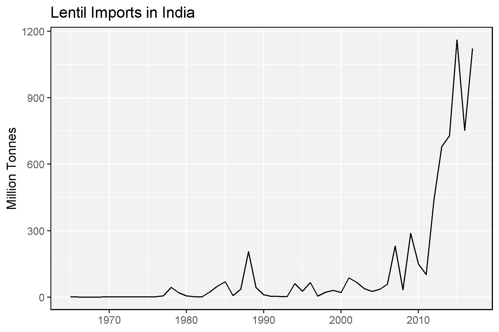
agData_FAO_Fertilizers
# Get Data
xx <- agData_FAO_Fertilizers %>% as_tibble()
xx
## # A tibble: 438,316 x 6
## Area Item Year Measurement Unit Value
## <fct> <chr> <dbl> <chr> <chr> <dbl>
## 1 Afghanistan Nitrogenous fertilizers 1961 Import Quantity tonnes 1000
## 2 Afghanistan Nitrogenous fertilizers 1961 Agricultural Use tonnes 1000
## 3 Afghanistan Phosphate fertilizers 1961 Import Quantity tonnes 100
## 4 Afghanistan Phosphate fertilizers 1961 Agricultural Use tonnes 100
## 5 Afghanistan Total Fertilizers 1961 Import Quantity tonnes 1100
## 6 Afghanistan Total Fertilizers 1961 Agricultural Use tonnes 1100
## 7 Albania Ammonium nitrate (AN) 1961 Import Quantity tonnes 3187
## 8 Albania Ammonium nitrate (AN) 1961 Agricultural Use tonnes 3187
## 9 Albania Nitrogenous fertilizers 1961 Import Quantity tonnes 3187
## 10 Albania Nitrogenous fertilizers 1961 Agricultural Use tonnes 3187
## # ... with 438,306 more rows
# List Measurements
xx %>% distinct(Measurement, Unit)
## # A tibble: 6 x 2
## Measurement Unit
## <chr> <chr>
## 1 Import Quantity tonnes
## 2 Agricultural Use tonnes
## 3 Production tonnes
## 4 Export Quantity tonnes
## 5 Import Value 1000 US$
## 6 Export Value 1000 US$
# List Crops
xx %>% distinct(Item)
## # A tibble: 50 x 1
## Item
## <chr>
## 1 Nitrogenous fertilizers
## 2 Phosphate fertilizers
## 3 Total Fertilizers
## 4 Ammonium nitrate (AN)
## 5 Potash fertilizers
## 6 Single Superphosphate
## 7 Ammonium Phosphate (N)
## 8 Ammonium sulphate
## 9 Ammonium SulphateNitrate
## 10 Basic Slag
## # ... with 40 more rows
# Prep data for an example plot
xx <- xx %>% filter(Area == "China",
Item == "Nitrogenous fertilizers",
Measurement == "Agricultural Use")
# Plot
mp <- ggplot(xx, aes(x = Year, y = Value / 1000000, group = Measurement)) +
geom_line() +
theme_agData() +
labs(title = "Nitrogenous fertilizer use in China",
y = "Million Tonnes", x = NULL)
ggsave("introduction_to_agdata_05.png", mp, width = 6, height = 4)
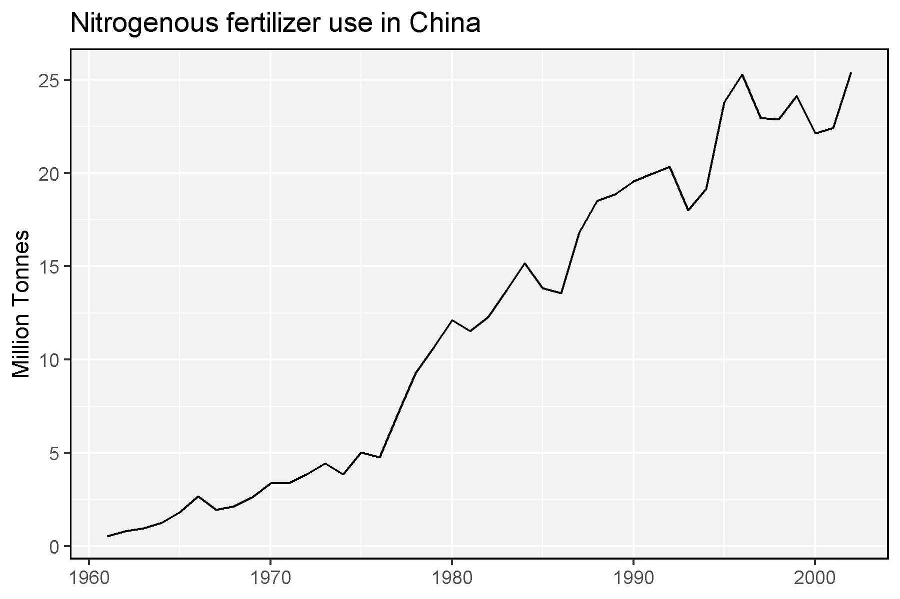
agData_FAO_Population
# Get Data
xx <- agData_FAO_Population %>% as_tibble()
# List Measurements
xx %>% distinct(Measurement, Unit)
## # A tibble: 5 x 2
## Measurement Unit
## <chr> <chr>
## 1 Total People
## 2 Male People
## 3 Female People
## 4 Rural People
## 5 Urban People
# Prep data for an example plot
xx <- xx %>% filter(Area == "World", Measurement == "Total")
# Plot
mp <- ggplot(xx, aes(x = Year, y = Value / 1000000000, group = Measurement)) +
geom_line() +
theme_agData() +
labs(title = "World Population",
y = "Billion", x = NULL)
ggsave("introduction_to_agdata_06.png", mp, width = 6, height = 4)
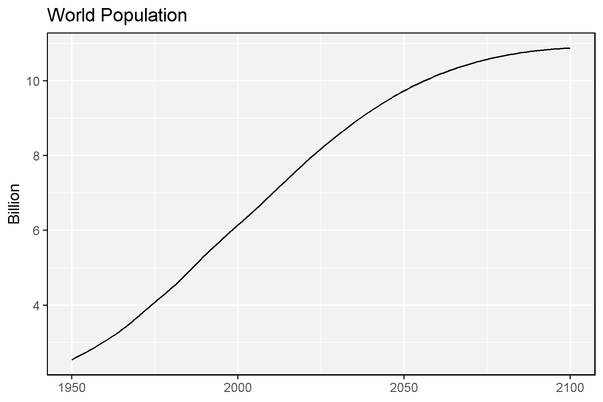
agData_STATCAN_Beehives
# Get Data
xx <- agData_STATCAN_Beehives %>% as_tibble()
xx
## # A tibble: 5,633 x 6
## Area Animal Year Measurement Unit Value
## <fct> <chr> <int> <fct> <fct> <dbl>
## 1 Canada Honeybees 1924 Beekeepers number 22205
## 2 British Columbia Honeybees 1924 Beekeepers number 2410
## 3 Alberta Honeybees 1924 Beekeepers number 160
## 4 Saskatchewan Honeybees 1924 Beekeepers number 410
## 5 Manitoba Honeybees 1924 Beekeepers number 1260
## 6 Ontario Honeybees 1924 Beekeepers number 10000
## 7 Quebec Honeybees 1924 Beekeepers number 7400
## 8 New Brunswick Honeybees 1924 Beekeepers number 360
## 9 Prince Edward Island Honeybees 1924 Beekeepers number 5
## 10 Nova Scotia Honeybees 1924 Beekeepers number 200
## # ... with 5,623 more rows
# List Measurements
xx %>% distinct(Measurement, Unit)
## # A tibble: 6 x 2
## Measurement Unit
## <fct> <fct>
## 1 Beekeepers number
## 2 Colonies number
## 3 Production tonnes
## 4 Value million $CAD
## 5 Yield kg/colony
## 6 Colonies/Beekeeper number
# Spread data to wide format
yy <- xx %>% select(-Unit) %>% spread(Measurement, Value) %>% arrange(Year)
str(yy)
## tibble [940 x 9] (S3: tbl_df/tbl/data.frame)
## $ Area : Factor w/ 14 levels "Canada","British Columbia",..: 1 2 3 4 5 6 7 8 9 10 ...
## $ Animal : chr [1:940] "Honeybees" "Honeybees" "Honeybees" "Honeybees" ...
## $ Year : int [1:940] 1924 1924 1924 1924 1924 1924 1924 1924 1924 1924 ...
## $ Beekeepers : num [1:940] 22205 2410 160 410 1260 ...
## $ Colonies : num [1:940] 280010 14600 NA 1200 10840 ...
## $ Colonies/Beekeeper: num [1:940] 12.61 6.06 NA 2.93 8.6 ...
## $ Production : num [1:940] 7638489 307989 24948 35834 295288 ...
## $ Value : num [1:940] 2.085 0.149 0.014 0.018 0.098 ...
## $ Yield : num [1:940] 27 21 NA 30 27 31 22 13 15 29 ...
# Prep data for an example plot
xx <- xx %>% filter(Area == "Saskatchewan", Measurement == "Colonies")
# Plot
mp <- ggplot(xx, aes(x = Year, y = Value / 1000, group = Area)) +
geom_line() +
theme_agData() +
labs(title = "Honeybee Colonies in Saskatchewan, Canada",
y = "Thousand Colonies", x = NULL)
ggsave("introduction_to_agdata_07.png", mp, width = 6, height = 4)
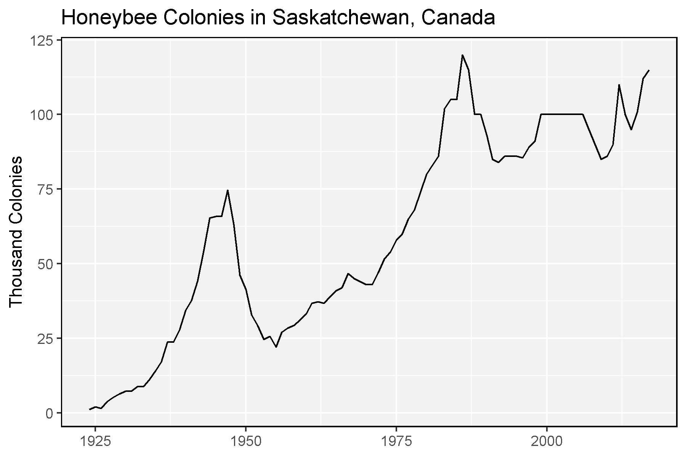
agData_STATCAN_Crops
# Get Data
xx <- agData_STATCAN_Crops %>% as_tibble()
xx
## # A tibble: 53,269 x 6
## Area Crop Year Measurement Unit Value
## <fct> <chr> <int> <chr> <chr> <dbl>
## 1 Canada Barley 1908 Area seeded hectares 707100
## 2 Canada Beans 1908 Area seeded hectares 24200
## 3 Canada Buckwheat 1908 Area seeded hectares 117950
## 4 Canada Flaxseed 1908 Area seeded hectares 56000
## 5 Canada Mixed grains 1908 Area seeded hectares 235550
## 6 Canada Oats 1908 Area seeded hectares 3200550
## 7 Canada Peas 1908 Area seeded hectares 167050
## 8 Canada Rye 1908 Area seeded hectares 41281
## 9 Canada Sugar beets 1908 Area seeded hectares 4400
## 10 Canada Tame hay 1908 Area seeded hectares 3326000
## # ... with 53,259 more rows
# List Measurements
xx %>% distinct(Measurement, Unit)
## # A tibble: 5 x 2
## Measurement Unit
## <chr> <chr>
## 1 Area seeded hectares
## 2 Yield t/ha
## 3 Production tonnes
## 4 Average farm price $CAD/t
## 5 Area harvested hectares
# List Crops
xx %>% distinct(Crop)
## # A tibble: 25 x 1
## Crop
## <chr>
## 1 Barley
## 2 Beans
## 3 Buckwheat
## 4 Flaxseed
## 5 Mixed grains
## 6 Oats
## 7 Peas
## 8 Rye
## 9 Sugar beets
## 10 Tame hay
## # ... with 15 more rows
# Prep data for an example plot
xx <- xx %>% filter(Area == "Saskatchewan", Crop == "Canola", Measurement == "Production")
# Plot
mp <- ggplot(xx, aes(x = Year, y = Value / 1000000, group = Area)) +
geom_line() +
theme_agData() +
labs(title = "Canola Production in Saskatchewan, Canada",
y = "Million Tonnes", x = NULL)
ggsave("introduction_to_agdata_08.png", mp, width = 6, height = 4)
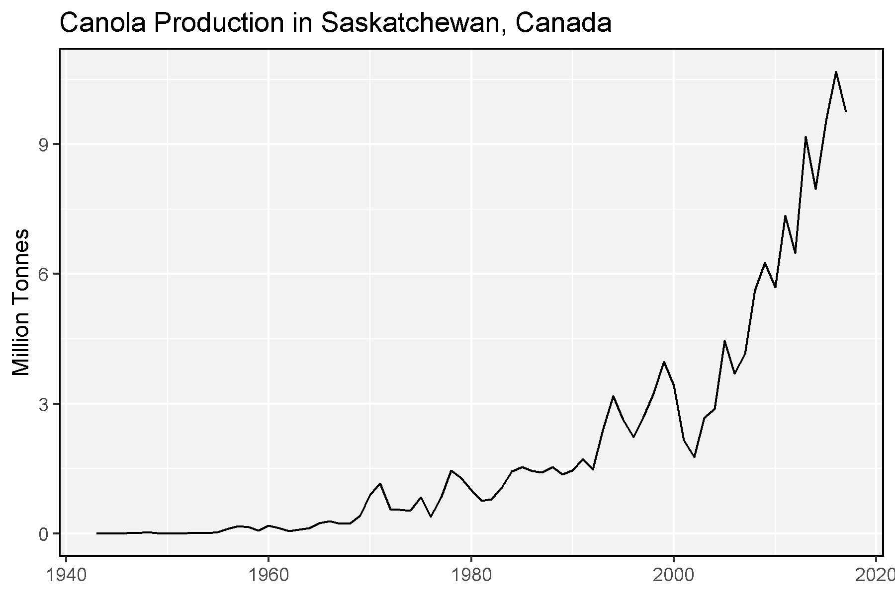
agData_STATCAN_Livestock
# Get Data
xx <- agData_STATCAN_Livestock %>% as_tibble()
xx
## # A tibble: 7,545 x 6
## Area Animal Year Measurement Unit Value
## <fct> <chr> <int> <chr> <fct> <dbl>
## 1 Canada Total cattle and calves 1921 Number of animals number 8369489
## 2 Canada Total pigs 1921 Number of farms reporting number 452935
## 3 Canada Total pigs 1921 Number of animals number 3324291
## 4 Canada Total pigs 1921 Average number of animals number 7
## 5 Canada Total sheep and lambs 1921 Number of farms reporting number 161838
## 6 Canada Total sheep and lambs 1921 Number of animals number 3200467
## 7 Canada Total sheep and lambs 1921 Average number of animals number 20
## 8 Canada Horses and ponies 1921 Number of farms reporting number 608272
## 9 Canada Horses and ponies 1921 Number of animals number 3451752
## 10 Canada Horses and ponies 1921 Average number of animals number 6
## # ... with 7,535 more rows
# List Measurements
xx %>% distinct(Measurement, Unit)
## # A tibble: 3 x 2
## Measurement Unit
## <chr> <fct>
## 1 Number of animals number
## 2 Number of farms reporting number
## 3 Average number of animals number
# List Crops
xx %>% distinct(Animal)
## # A tibble: 26 x 1
## Animal
## <chr>
## 1 Total cattle and calves
## 2 Total pigs
## 3 Total sheep and lambs
## 4 Horses and ponies
## 5 Total hens and chickens (birds)
## 6 Dairy cows
## 7 Beef cows
## 8 Total heifers
## 9 Bulls, 1 year and over
## 10 Steers, 1 year and over
## # ... with 16 more rows
# Prep data for an example plot
xx <- xx %>% filter(Area == "Saskatchewan",
Measurement == "Number of animals",
Animal == "Total hens and chickens (birds)")
# Plot
mp <- ggplot(xx, aes(x = Year, y = Value / 1000000)) +
geom_line() +
theme_agData() +
labs(title = "Chicken Production in Saskatchewan",
y = "Million Animals", x = NULL)
ggsave("introduction_to_agdata_09.png", mp, width = 6, height = 4)
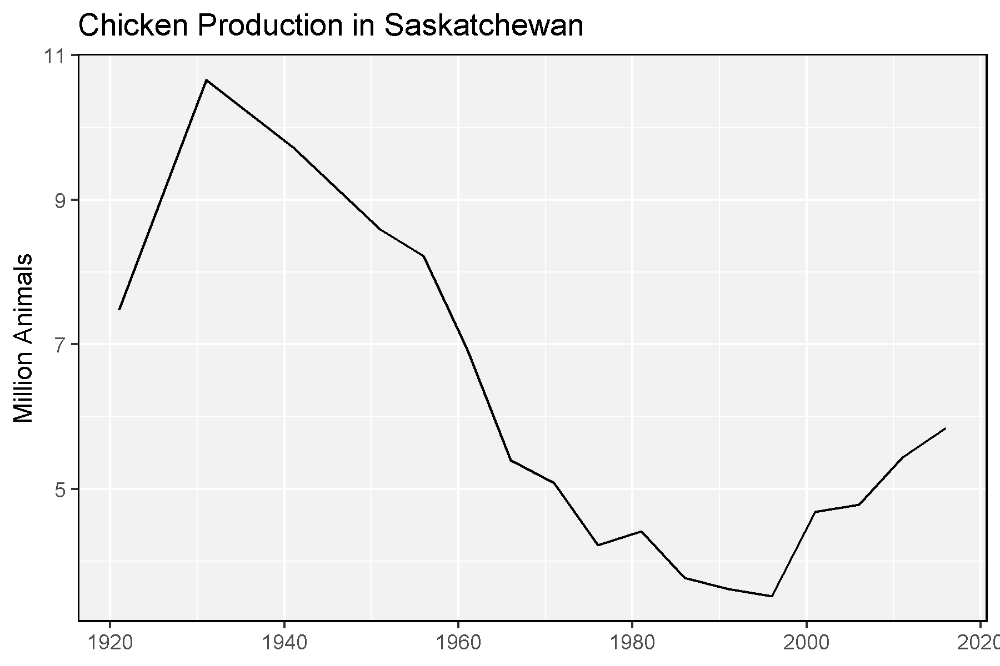
agData_STATCAN_FarmUse_Land
# Get Data
xx <- agData_STATCAN_FarmUse_Land %>% as_tibble()
xx
## # A tibble: 2,358 x 6
## Area Item Year Measurement Unit Value
## <chr> <chr> <int> <fct> <chr> <dbl>
## 1 Canada Total area of farms 1921 Area Number of farms reporting 711090
## 2 Canada Total area of farms 1931 Area Number of farms reporting 728623
## 3 Canada Total area of farms 1941 Area Number of farms reporting 732832
## 4 Canada Total area of farms 1951 Area Number of farms reporting 623087
## 5 Canada Total area of farms 1956 Area Number of farms reporting 574993
## 6 Canada Total area of farms 1961 Area Number of farms reporting 480877
## 7 Canada Total area of farms 1966 Area Number of farms reporting 430503
## 8 Canada Total area of farms 1971 Area Number of farms reporting 366110
## 9 Canada Total area of farms 1976 Area Number of farms reporting 338552
## 10 Canada Total area of farms 1981 Area Number of farms reporting 318361
## # ... with 2,348 more rows
# List Measurements
xx %>% distinct(Measurement, Unit)
## # A tibble: 4 x 2
## Measurement Unit
## <fct> <chr>
## 1 Area Number of farms reporting
## 2 Area Acres
## 3 Area Hectares
## 4 Area Average area in acres per farm reporting
# List Area
xx %>% distinct(Area)
## # A tibble: 11 x 1
## Area
## <chr>
## 1 Canada
## 2 Newfoundland and Labrador
## 3 Prince Edward Island
## 4 Nova Scotia
## 5 New Brunswick
## 6 Quebec
## 7 Ontario
## 8 Manitoba
## 9 Saskatchewan
## 10 Alberta
## 11 British Columbia
# List Crops
xx %>% distinct(Item)
## # A tibble: 5 x 1
## Item
## <chr>
## 1 Total area of farms
## 2 Land in crops
## 3 Summerfallow land
## 4 Tame or seeded pasture
## 5 All other land
# Prep data for an example plot
xx <- xx %>% filter(Area == "Saskatchewan", Item == "Total area of farms",
Unit == "Hectares", !is.na(Value))
# Plot
mp <- ggplot(xx, aes(x = Year, y = Value / 1000000)) +
geom_line() +
geom_point() +
theme_agData() +
labs(title = "Saskatchewan Hectares",
y = "Million Hectares", x = NULL)
ggsave("introduction_to_agdata_10.png", mp, width = 6, height = 4)
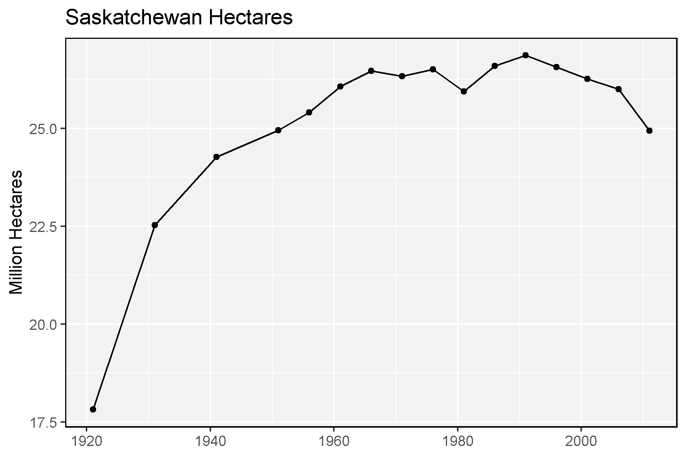
agData_USDA_Crops
# Get Data
xx <- agData_USDA_Crops %>% as_tibble()
xx
## # A tibble: 2,555 x 6
## Area Crop Measurement Year Unit Value
## <fct> <fct> <fct> <dbl> <fct> <dbl>
## 1 USA Wheat Area harvested 1866 hectares 6235402.
## 2 USA Wheat Yield 1866 t/ha 0.74
## 3 USA Wheat Production 1866 tonnes 4618555.
## 4 USA Maize Area harvested 1866 hectares 12147460.
## 5 USA Maize Yield 1866 t/ha 1.52
## 6 USA Maize Production 1866 tonnes 18563517.
## 7 USA Barley Area harvested 1866 hectares 305133.
## 8 USA Barley Yield 1866 t/ha 1.29
## 9 USA Barley Production 1866 tonnes 393972.
## 10 USA Oats Area harvested 1866 hectares 3211183.
## # ... with 2,545 more rows
# List Measurements
xx %>% distinct(Measurement, Unit)
## # A tibble: 4 x 2
## Measurement Unit
## <fct> <fct>
## 1 Area harvested hectares
## 2 Yield t/ha
## 3 Production tonnes
## 4 Area seeded hectares
# List Area
xx %>% distinct(Area)
## # A tibble: 1 x 1
## Area
## <fct>
## 1 USA
# List Crops
xx %>% distinct(Crop)
## # A tibble: 5 x 1
## Crop
## <fct>
## 1 Wheat
## 2 Maize
## 3 Barley
## 4 Oats
## 5 Sorghum
# Spread data to wide format
xx %>% select(-Unit) %>% spread(Measurement, Value) %>% arrange(Year)
## # A tibble: 697 x 7
## Area Crop Year `Area harvested` `Area seeded` Production Yield
## <fct> <fct> <dbl> <dbl> <dbl> <dbl> <dbl>
## 1 USA Barley 1866 305133. NA 393972. 1.29
## 2 USA Maize 1866 12147460. NA 18563517. 1.52
## 3 USA Oats 1866 3211183. NA 3583486. 1.12
## 4 USA Wheat 1866 6235402. NA 4618555. 0.74
## 5 USA Barley 1867 428158. NA 519272. 1.21
## 6 USA Maize 1867 12996896. NA 20166102. 1.55
## 7 USA Oats 1867 3308713. NA 3433043. 1.04
## 8 USA Wheat 1867 6773634. NA 5739154. 0.847
## 9 USA Barley 1868 430586. NA 505120. 1.17
## 10 USA Maize 1868 14210954. NA 23358645. 1.64
## # ... with 687 more rows
# Prep data for an example plot
xx <- xx %>% filter(Crop == "Wheat", Measurement == "Production")
# Plot
mp <- ggplot(xx, aes(x = Year, y = Value / 1000000, group = Area)) +
geom_line() +
theme_agData() +
labs(title = "Wheat Production in the United States of America",
y = "Million Tonnes", x = NULL)
ggsave("introduction_to_agdata_11.png", mp, width = 6, height = 4)
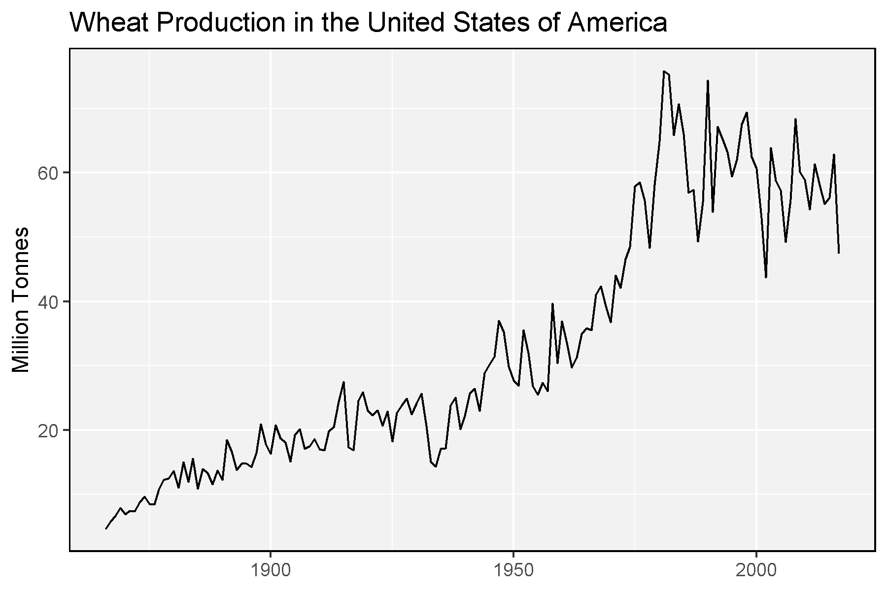
agData_USDA_TFP
# Get Data
xx <- agData_USDA_TFP %>% as_tibble()
xx
## # A tibble: 120,602 x 4
## Area Year Measurement Value
## <chr> <dbl> <chr> <dbl>
## 1 South Africa 1961 Ag TFP 52.9
## 2 Cameroon 1961 Ag TFP 74.7
## 3 Central African Republic 1961 Ag TFP 100.
## 4 Congo, DR 1961 Ag TFP 128.
## 5 Congo, Republic 1961 Ag TFP 117.
## 6 Equatorial Guinea 1961 Ag TFP 187.
## 7 Gabon 1961 Ag TFP 127.
## 8 Sao Tome and Principe 1961 Ag TFP 125.
## 9 Burundi 1961 Ag TFP 116.
## 10 Kenya 1961 Ag TFP 66.7
## # ... with 120,592 more rows
# List Measurements
xx %>% distinct(Measurement)
## # A tibble: 12 x 1
## Measurement
## <chr>
## 1 Ag TFP
## 2 Inputs
## 3 Output
## 4 Ag Land
## 5 Cropand
## 6 Irrig
## 7 Pasture
## 8 Labor
## 9 Livestock
## 10 Machinery
## 11 Fertilizer
## 12 Feed
# Prep data for an example plot
xx <- xx %>% filter(Area == "World", Measurement == "Ag TFP")
# Plot
mp <- ggplot(xx, aes(x = Year, y = Value / 1000000)) +
geom_line() +
theme_agData() +
labs(title = "World Total Factor Productivity",
y = "Ag TFP", x = NULL)
ggsave("introduction_to_agdata_12.png", mp, width = 6, height = 4)
agData_ISAAA_Area
# Get Data
xx <- agData_ISAAA_Area %>% filter(Measurement == "Area") %>%
as_tibble()
xx
## # A tibble: 23 x 5
## Year Area Measurement Unit Value
## <dbl> <chr> <chr> <chr> <dbl>
## 1 1996 World Area Hectares 2800000
## 2 1997 World Area Hectares 12800000
## 3 1998 World Area Hectares 27800000
## 4 1999 World Area Hectares 39900000
## 5 2000 World Area Hectares 44200000
## 6 2001 World Area Hectares 52600000
## 7 2002 World Area Hectares 58700000
## 8 2003 World Area Hectares 67700000
## 9 2004 World Area Hectares 81000000
## 10 2005 World Area Hectares 90000000
## # ... with 13 more rows
# Plot
mp <- ggplot(xx, aes(x = Year, y = Value / 1000000)) +
geom_line() +
theme_agData() +
labs(title = "Global Area of Genetically Engineered Crops",
y = "Million Hectares", x = NULL)
ggsave("introduction_to_agdata_13.png", mp, width = 6, height = 4)
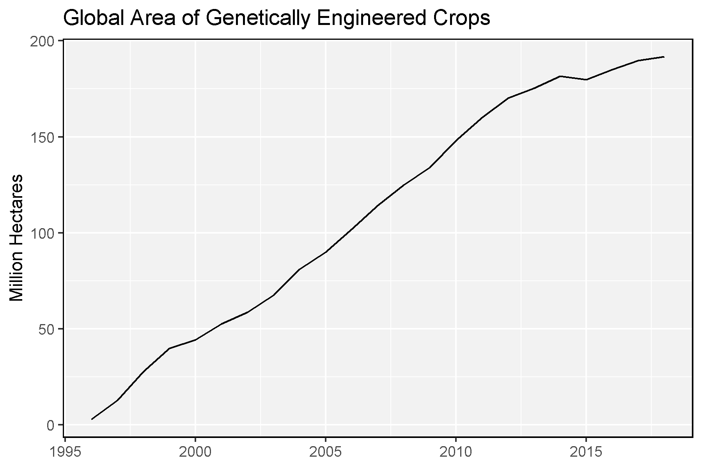
agData_ISAAA_Country
# Get Data
xx <- agData_ISAAA_Country %>% as_tibble()
xx
## # A tibble: 1,758 x 5
## Year Area Measurement Unit Value
## <dbl> <chr> <chr> <chr> <dbl>
## 1 1996 USA Area Hectares 1500000
## 2 1996 China Area Hectares 1100000
## 3 1996 Argentina Area Hectares 100000
## 4 1996 Canada Area Hectares 100000
## 5 1996 Australia Area Hectares 100000
## 6 1996 Mexico Area Hectares 100000
## 7 1997 USA Area Hectares 8100000
## 8 1997 Argentina Area Hectares 1400000
## 9 1997 Canada Area Hectares 1300000
## 10 1997 Australia Area Hectares 100000
## # ... with 1,748 more rows
# List Area
xx %>% distinct(Area)
## # A tibble: 39 x 1
## Area
## <chr>
## 1 USA
## 2 China
## 3 Argentina
## 4 Canada
## 5 Australia
## 6 Mexico
## 7 Spain
## 8 France
## 9 South Africa
## 10 Portugal
## # ... with 29 more rows
# Prep data for an example plot
xx <- xx %>% filter(Area == "Canada", Measurement == "Area")
# Plot
mp <- ggplot(xx, aes(x = Year, y = Value / 1000000)) +
geom_line() +
theme_agData() +
labs(title = "Area of Genetically Engineered in Canada",
y = "Million Hectares", x = NULL)
ggsave("introduction_to_agdata_14.png", mp, width = 6, height = 4)
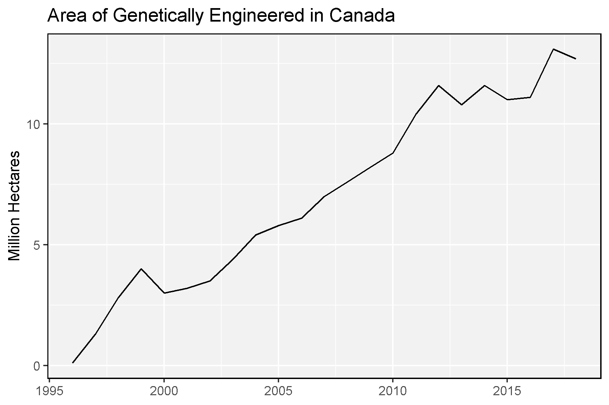
agData_ISAAA_Crop
# Get Data
xx <- agData_ISAAA_Crop %>% as_tibble()
xx
## # A tibble: 614 x 5
## Year Crop Measurement Unit Value
## <dbl> <chr> <chr> <chr> <dbl>
## 1 1996 Soybean Area Hectares 500000
## 2 1996 Maize Area Hectares 300000
## 3 1996 Tabacco Area Hectares 1000000
## 4 1996 Cotton Area Hectares 800000
## 5 1996 Canola Area Hectares 100000
## 6 1996 Tomato Area Hectares 100000
## 7 1996 Potato Area Hectares 100000
## 8 1997 Soybean Area Hectares 5100000
## 9 1997 Maize Area Hectares 3200000
## 10 1997 Tabacco Area Hectares 1600000
## # ... with 604 more rows
# List Crops
xx %>% distinct(Crop)
## # A tibble: 13 x 1
## Crop
## <chr>
## 1 Soybean
## 2 Maize
## 3 Tabacco
## 4 Cotton
## 5 Canola
## 6 Tomato
## 7 Potato
## 8 Squash
## 9 Papaya
## 10 Rice
## 11 Others
## 12 Alfalfa
## 13 Sugar beet
# Prep data for an example plot
xx <- xx %>% filter(Crop %in% c("Soybean","Maize"),
Measurement == "Area")
# Plot
mp <- ggplot(xx, aes(x = Year, y = Value / 1000000, color = Crop)) +
geom_line() +
theme_agData() +
labs(title = "Area of Genetically Engineered Maize and Soybean",
y = "Million Hectares", x = NULL)
ggsave("introduction_to_agdata_15.png", mp, width = 6, height = 4)
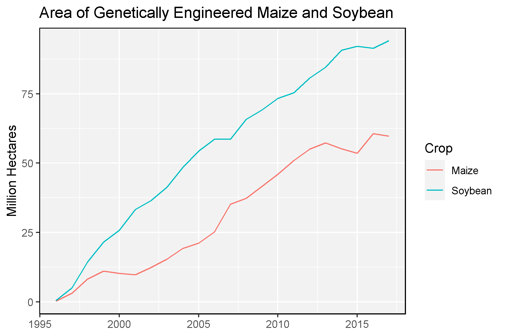
agData_ISAAA_CropPercent
# Get Data
xx <- agData_ISAAA_CropPercent %>% as_tibble()
xx
## # A tibble: 213 x 5
## Year Crop Measurement Unit Value
## <dbl> <chr> <chr> <chr> <dbl>
## 1 1999 Soybean Area Hectares 72000000
## 2 1999 Canola Area Hectares 25000000
## 3 1999 Cotton Area Hectares 34000000
## 4 1999 Maize Area Hectares 140000000
## 5 2000 Soybean Area Hectares 72000000
## 6 2000 Cotton Area Hectares 34000000
## 7 2000 Canola Area Hectares 25000000
## 8 2000 Maize Area Hectares 140000000
## 9 2001 Soybean Area Hectares 72000000
## 10 2001 Cotton Area Hectares 34000000
## # ... with 203 more rows
# List Crops
xx %>% distinct(Crop)
## # A tibble: 5 x 1
## Crop
## <chr>
## 1 Soybean
## 2 Canola
## 3 Cotton
## 4 Maize
## 5 Others
# Prep data for an example plot
xx <- xx %>% filter(Crop %in% c("Soybean","Maize"),
Measurement == "Percent")
# Plot
mp <- ggplot(xx, aes(x = Year, y = Value, color = Crop)) +
geom_line() +
theme_agData() +
labs(title = "Percent of Global Crop Area Dedicated to GE Varieties",
y = "%", x = NULL)
ggsave("introduction_to_agdata_16.png", mp, width = 6, height = 4)
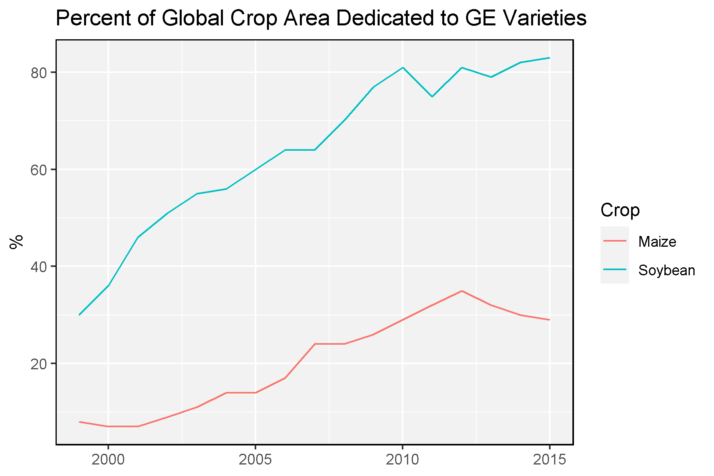
agData_ISAAA_DVDDVG
# Get Data
xx <- agData_ISAAA_DVDDVG %>% as_tibble()
xx
## # A tibble: 88 x 5
## Year Area Measurement Unit Value
## <dbl> <chr> <chr> <chr> <dbl>
## 1 1996 Industrialized countries Area Hectares 1600000
## 2 1996 Developing countries Area Hectares 1200000
## 3 1997 Industrialized countries Area Hectares 9500000
## 4 1997 Developing countries Area Hectares 3300000
## 5 1998 Industrialized countries Area Hectares 23400000
## 6 1998 Developing countries Area Hectares 4400000
## 7 1999 Industrialized countries Area Hectares 32800000.
## 8 1999 Developing countries Area Hectares 7100000
## 9 2000 Industrialized countries Area Hectares 33500000
## 10 2000 Developing countries Area Hectares 10700000
## # ... with 78 more rows
# Prep data
xx <- xx %>% filter(Unit == "Percent")
# Plot
mp <- ggplot(xx, aes(x = Year, y = Value, color = Area)) +
geom_line() +
theme_agData() +
labs(title = "Percentage of Genetically Engineered Crops",
y = "%", x = NULL)
ggsave("introduction_to_agdata_17.png", mp, width = 6, height = 4)
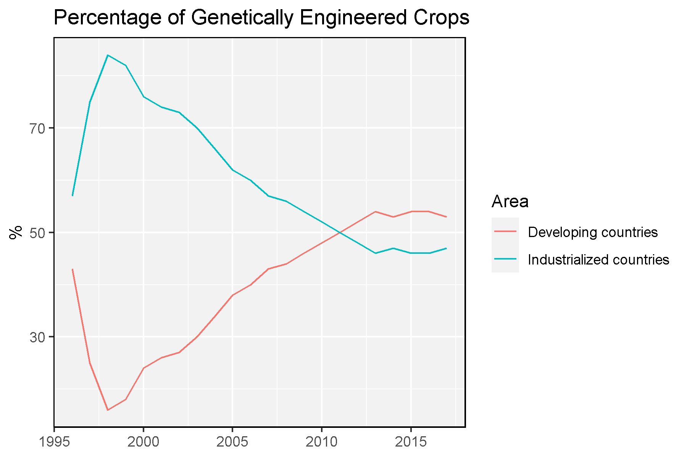
agData_ISAAA_Value
# Get Data
xx <- agData_ISAAA_Value %>% as_tibble()
xx
## # A tibble: 22 x 3
## Year Unit Value
## <dbl> <chr> <dbl>
## 1 1996 Billion USD 0.093
## 2 1997 Billion USD 0.591
## 3 1998 Billion USD 1.56
## 4 1999 Billion USD 2.35
## 5 2000 Billion USD 2.43
## 6 2001 Billion USD 2.93
## 7 2002 Billion USD 3.47
## 8 2003 Billion USD 4.05
## 9 2004 Billion USD 5.09
## 10 2005 Billion USD 5.71
## # ... with 12 more rows
# Plot
mp <- ggplot(xx, aes(x = Year, y = Value)) +
geom_line() +
theme_agData() +
labs(title = "Value of Genetically Engineered Seed",
y = "Billion USD", x = NULL)
ggsave("introduction_to_agdata_18.png", mp, width = 6, height = 4)
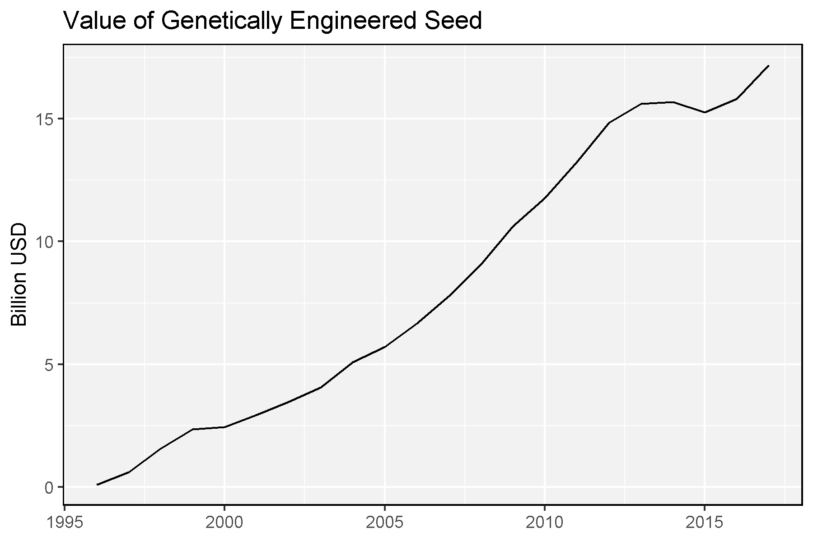
agData_People
# Get Data
xx <- agData_People %>% as_tibble()
xx
## # A tibble: 7,009 x 5
## Area Year Measurement Unit Value
## <chr> <int> <chr> <chr> <dbl>
## 1 Belgium 1856 Total Number 712000
## 2 Belgium 1866 Total Number 705000
## 3 Belgium 1880 Total Number 674000
## 4 Belgium 1890 Total Number 640000
## 5 Belgium 1900 Total Number 616000
## 6 Belgium 1910 Total Number 585000
## 7 Belgium 1920 Total Number 525000
## 8 Belgium 1930 Total Number 505000
## 9 Belgium 1947 Total Number 364000
## 10 Belgium 1961 Total Number 213000
## # ... with 6,999 more rows